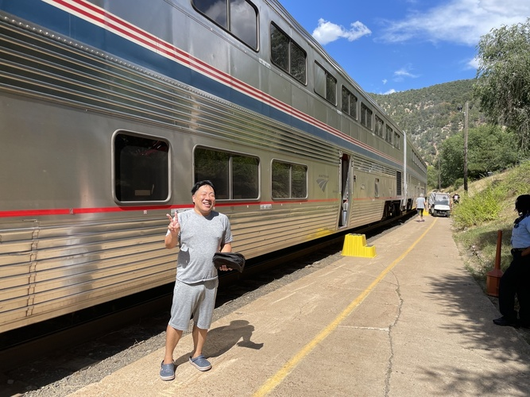

Grand Express Train (Russia): Moscow - St. Petersburg
Sunrise Express (Japan): Izumo - Tokyo
Amtrak California Zephyr (United States): San Francisco - Chicago
Travel with Amtrak California Zephyr
After some sightseeings in San Francisco, I took the California Zephyr to come to Chicago. It was a two-night, three-day sleeper train trip. It was great experience and I would like to share a photo and a movie below.

A photo at Amtrak station, taken by a kind gentleman